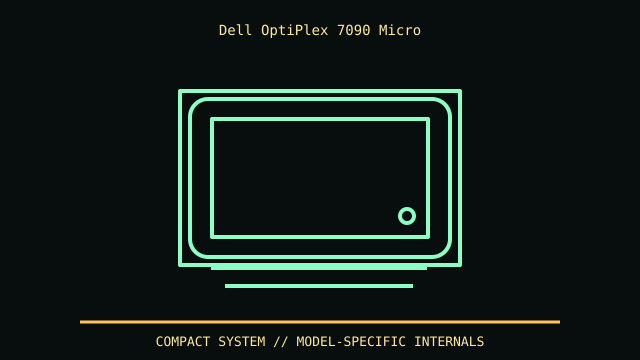

[ MODEL IDENTIFICATION // OPTIPLEX 7090 MICRO FORM FACTOR ]
Dell OptiPlex 7090 Micro
About 182 × 178 × 36 mm (H × D × W); confirm Dell convention and SKU. Weight varies; stand/VESA mounting needs accessory-specific clearance.

REVISION CAVEAT: 7090 Micro differs from 7090 SFF/Tower. Service tag and Setup & Specifications manual identify adapter, storage cage and antennas.
Specifications & fit
| Catalog subcategory | Office and mini-PC enclosures |
|---|---|
| Model / generation | OptiPlex 7090 Micro Form Factor |
| Dimensions / form factor / clearance | About 182 × 178 × 36 mm (H × D × W); confirm Dell convention and SKU. Weight varies; stand/VESA mounting needs accessory-specific clearance. |
| Drive bays | M.2 SSD and optional 2.5-inch SATA drive with correct cage/cable. |
| Compatibility | Proprietary Dell system board, 65/90 W external adapter and no standard PCIe slots; not an SFF case donor. |
| Revision identification | 7090 Micro differs from 7090 SFF/Tower. Service tag and Setup & Specifications manual identify adapter, storage cage and antennas. |
Compatibility & preservation notes
Proprietary Dell system board, 65/90 W external adapter and no standard PCIe slots; not an SFF case donor.
Retain drive bracket and stand/VESA hardware. Follow Dell service disconnect procedure and keep vents clear; generic caddies may not align.
- Record the complete model/SKU, serial/date label, board and bay/backplane identifiers, accessories and manual revision before disassembly.
- Verify the exact fan, radiator, PSU, riser, cable and drive configuration against manufacturer dimensions; a published maximum does not ensure every combination fits simultaneously.
- Keep original brackets, fasteners, trays, feet and front-panel parts labeled with the chassis. Do not force components into modified or incomplete specimens.
Manufacturer, archive & standards sources
- Dell Support — OptiPlex 7090 Micro manualsPrimary manufacturer or technical-reference source for this named model; use the exact SKU/document revision.
- Dell — OptiPlex 7090 Micro Setup & SpecificationsAdditional manufacturer, archival, or dimensional reference. Options and specimen condition can change fit.
Approximate or convention-dependent dimensions are marked as such. Measure the individual unit for restoration, shipping and installation.